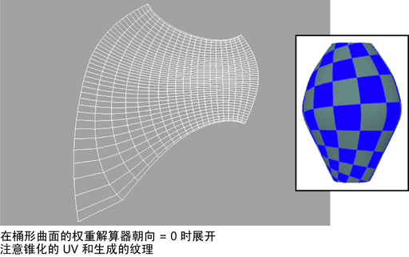
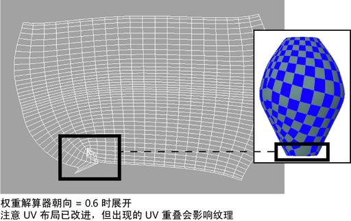
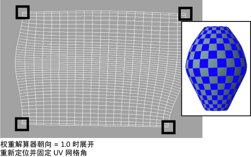
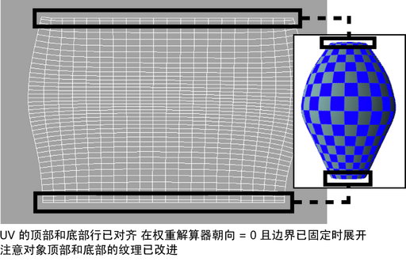

- 桶状的多边形对象已使用棋盘格纹理进行纹理映射。将“权重解算器朝向”(Weight solver towards)选项设定为 0（默认值）的情况下执行初始展开操作，最初会在“UV 纹理编辑器”(UV Texture Editor)中产生锥化的 UV 布局。生成的纹理贴图在对象上是歪曲和扭曲的。

- 另一个展开操作在“权重解算器朝向”(Weight solver towards)选项设定为 0.6 时执行。这会以更全局化的方式展开 UV 并减弱之前出现的锥化效果。UV 布局的可预测性更强，但是 UV 网格的左下角会出现一些 UV 重叠，从而导致纹理上出现重叠。

- 通过重新定位和固定 UV 网格的角点并在“权重解算器朝向”(Weight solver towards)设置为 0 时执行另一展开操作，可进一步松弛 UV 并移除重叠区域。

- UV 的顶部和底部行将会对齐，并在“权重解算器朝向”(Weight solver towards)选项设置为 0 且固定边界的情况下执行最终的展开操作。
